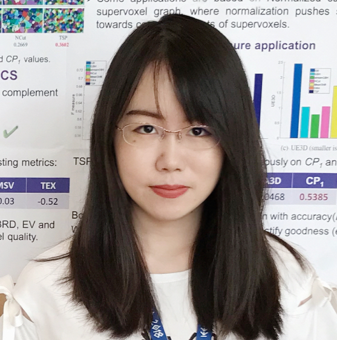
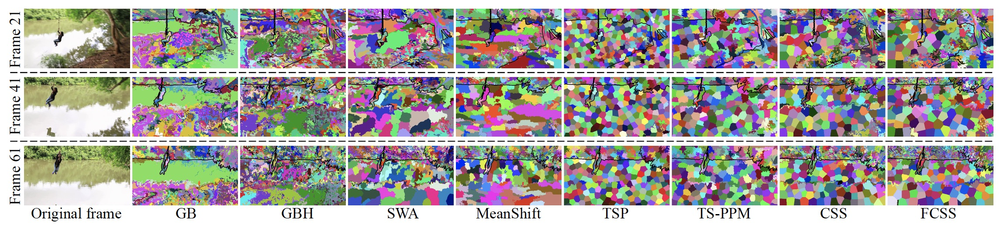
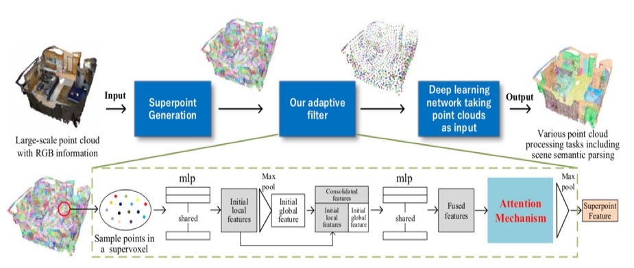
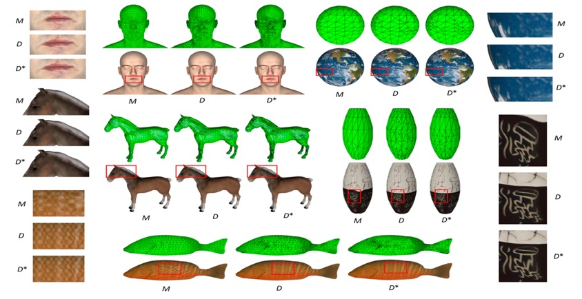
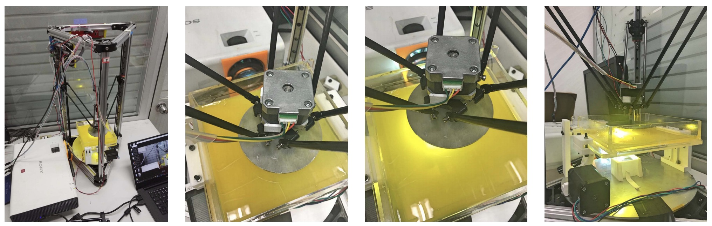
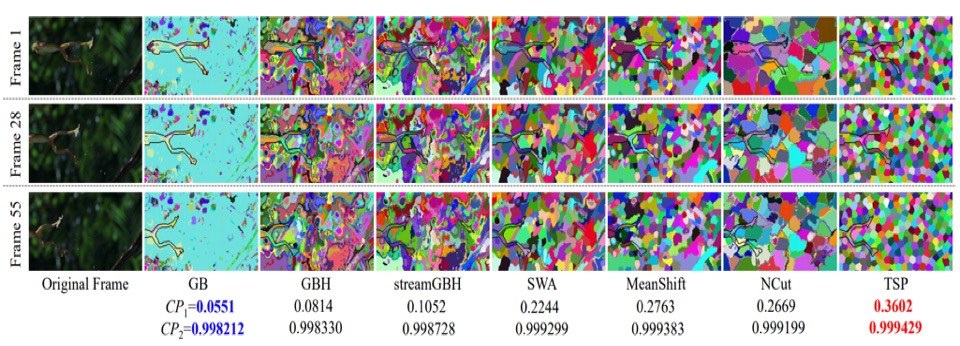
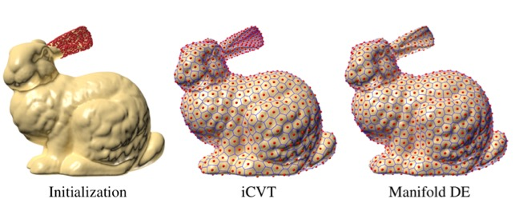
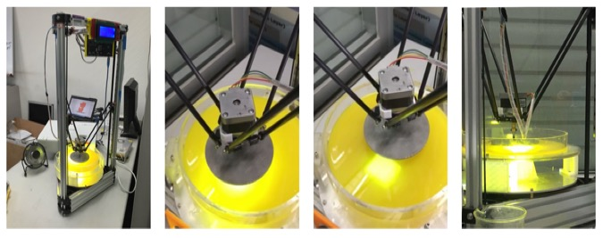
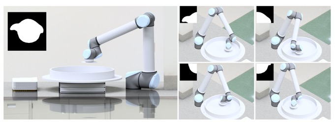

Ran Yi
Ph.D. Candidate
Department of Computer Science and Technology Contact InfoOffice: Room 3-524, FIT Building, Tsinghua University, Beijing, 100084, ChinaTel: +86 135-2276-3827 Email: yr16@mails.tsinghua.edu.cn [Curriculum Vitae] [Google Scholar] |
 |
Biography
I am a fourth-year Ph.D. student of CSCG Group in the Department of Computer Science and Technology, Tsinghua University, advised by Prof. Yong-Jin Liu. I also collaborate with Prof. Yu-Kun Lai, Prof. Paul L. Rosin and Prof. Ying He closely.
My research interests include computer vision and computer graphics.
Education
2016–present: Ph.D., Computer Science and Technology, CS Dept, Tsinghua University.
2012–2016: B.Eng., Electronic Information Science and Technology, EE Dept, Tsinghua University.
Publications
 |
Unpaired Portrait Drawing Generation via Asymmetric Cycle Mapping
Ran Yi, Yong-Jin Liu, Yu-Kun Lai, and Paul L. Rosin IEEE Conference on Computer Vision and Pattern Recognition (CVPR), to appear, 2020 |
|  |
Feature-Aware Uniform Tessellations on Video Manifold for Content-Sensitive Supervoxels
Ran Yi*, Zipeng Ye*, Wang Zhao, Minjing Yu, Yu-Kun Lai, Yong-Jin Liu IEEE Transactions on Pattern Analysis and Machine Intelligence (TPAMI), to appear, 2020 [preprint] [code] [demo video] |
 |
|
 |
Fast Computation of Content-Sensitive Superpixels and Supervoxels using q-distances
Zipeng Ye*, Ran Yi*, Minjing Yu, Yong-Jin Liu, and Ying He IEEE Conference on Computer Vision (ICCV), 2019 (* indicates equal contribution.) [pdf] |
|  |
An Adaptive Filter for Deep Learning Networks on Large-Scale Point Cloud
Wang Zhao*, Ran Yi*, and Yong-Jin Liu IEEE International Conference on Image Processing (ICIP), 2019 (* indicates equal contribution.) [pdf] |
|  |
Constructing Delaunay Mesh with Lower Dirichlet Energy than Intrinsic Delaunay Triangulation
Wenyong Gong, Ran Yi, Yong-Jin Liu, and Ying He Communications in Information and Systems (CIS), to appear, 2019 |
 |
Delaunay Mesh Simplification with Differential Evolution
Ran Yi, Yong-Jin Liu, and Ying He ACM Transactions on Graphics (SIGGRAPH ASIA), Vol. 37, No. 6, Article No. 263, 2018 [pdf] [slide] |
 |
Content-Sensitive Supervoxels via Uniform Tessellations on Video Manifolds
Ran Yi, Yong-Jin Liu, and Yu-Kun Lai IEEE Conference on Computer Vision and Pattern Recognition (CVPR), 2018 [pdf] [code] |
|  |
Delta DLP 3D Printing of Large Model
Ran Yi*, Chenming Wu*, Yong-Jin Liu, Ying He, and Charlie C. L. Wang IEEE Transactions on Automation Science and Engineering (TASE), Vol. 15, No. 3, pp. 1193-1204, 2018 [pdf] [demo video] |
|  |
Evaluation on the Compactness of Supervoxels
Ran Yi, Yong-Jin Liu, and Yu-Kun Lai IEEE Conference on Image Processing (ICIP), 2018 [pdf] |
|  |
Manifold Differential Evolution (MDE): A Global Optimization Method for Geodesic Centroidal Voronoi Tessellations on Meshes
Yong-Jin Liu, Chun-Xu Xu, Ran Yi, Dian Fan, and Ying He ACM Transactions on Graphics (SIGGRAPH ASIA), Vol. 35, No. 6, Article No. 243, 2016 [pdf] [demo video] |
|  |
Delta DLP 3D Printing with Large Size
Chenming Wu*, Ran Yi*, Yong-Jin Liu, Ying He, and Charlie C. L. Wang IEEE/RSJ International Conference on Intelligent Robots and Systems (IROS), 2016 (* indicates equal contribution.) [pdf] [demo video] |
|  |
RoboDLP: large object 3D printing using robotic arm
Ran Yi, Chenming Wu, Yong-Jin Liu, and Charlie C. L. Wang SIGGRAPH Asia 2016 Posters, Article No. 23, 2016 |
Honors & Awards
- CCF-CV 学术新锐奖, CCF-CV, 2019.11
- Microsoft Research Asia Fellowship Nomination Award, Microsoft, 2019.11
- China National Scholarship, Tsinghua University, 2019.10
- China National Scholarship, Tsinghua University, 2018.10
- CCF-CV 学术新锐奖提名, CCF-CV, 2018.10
- Beijing Outstanding Graduates, 2016.07
Awarded to graduates with outstanding academic performance of the universities at Beijing. - Excellent Graduates of Tsinghua University, Tsinghua University, 2016.07
- Excellent Academic Performance Single Scholarship, Tsinghua University, 2015.10
- Excellent Academic Performance Single Scholarship, Tsinghua University, 2014.10